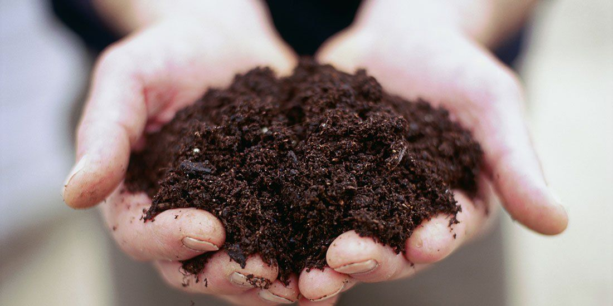

Soil

Soil is a mixture of organic matter, gases, minerals, liquids, and organisms that together support life such as plants, flowers and a home to insects .
How is it formed?
Soil is formed due to weathering of rocks.Large rocks break into smaller pieces due to rain, wind and temperature.Formation of soil is a slow process. It takes many years to form 1 inch of topsoil on the surface, scientists believe that it takes around millions of years.
What else makes Soil?
Apart from rocks and minerals there are other natural elements that are used to make the soil are:
• Water – Due to rain, water is held between the grains inside the pores.
• Air - Pores and cracks in the soil helps to provide air in it.
• Nutrients – Wastes of living things and organic matter.
• Microorganisms – Organisms that lives on soil, decompose the dead plants and animals into soil